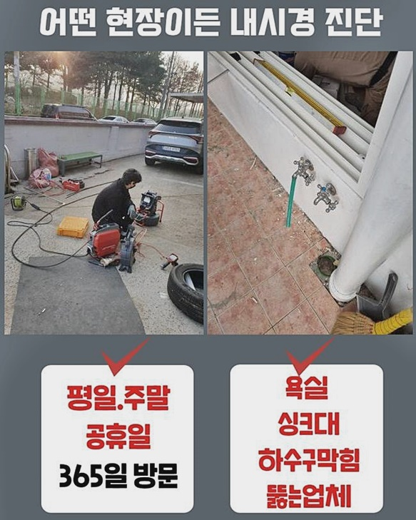
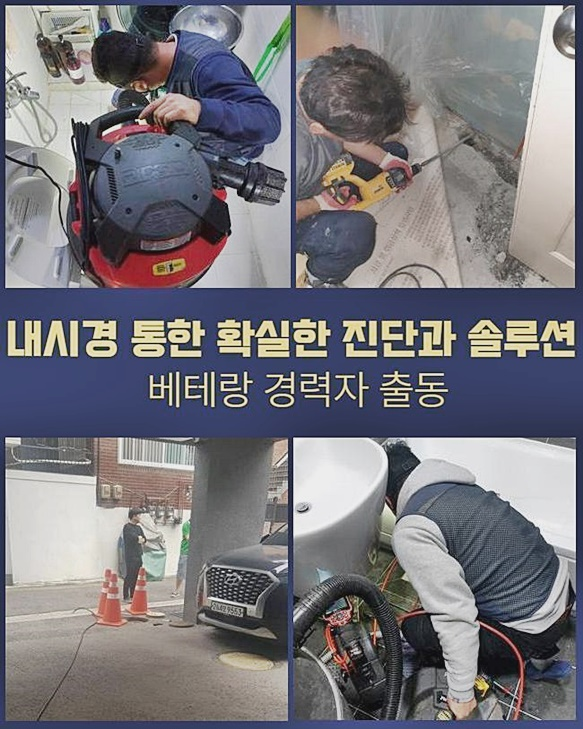
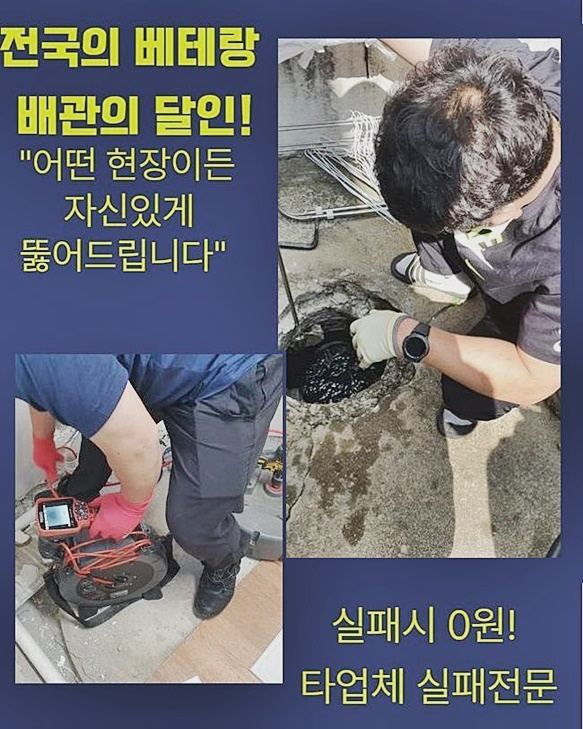
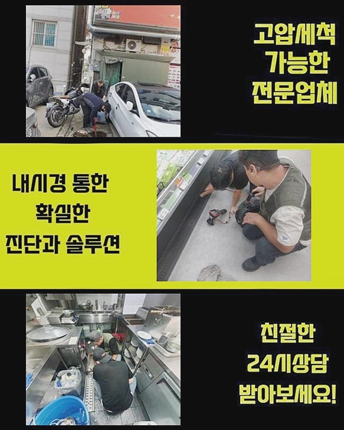
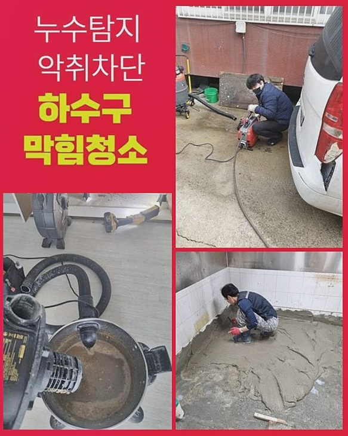
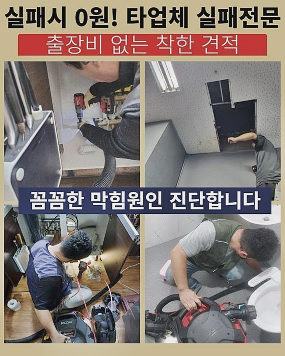

🏠 종로 종로2가화장실역류 청운효자동 오수맨홀청소 누수
용인 하수구막힘 전문 시공 후기

📋 작업 개요
- 위치: 용인
- 서비스 유형: 하수구막힘, 배관막힘, 맨홀막힘, 누수수리, 역류해결, 배관청소, 고압세척
- 작업 일시: 2024. 7. 7. 11:27
- 업체명: 하수구수사대 (010-5615-2118)
🔍 문제 상황
종로 종로2가화장실역류 청운효자동 오수맨홀청소 누수
공간과 관계없는채로 수돗물을 이용영위하신다면 배수장애는 어디에서라도 야기될 수 있죠
막혀버리는 사태가 발생되는 연유는 하수구 깊은곳에 자리잡은 슬러지들을 떠올릴 수 있습니다
물들이 배출된다거나 리모델링 등을 수행하는 시점에 하수도로 이물들이 반복적으로 흘러가는 현상이 벌어지므로 일상중에 청소를 그때그때 안한다면 증세가 걷잡을 수 없이 나타나는건 시간문제죠
이런저런 문제들이 발생되게되면 배수속도들이 단순히 관찰해도 하락하며 수도 이용에도 불편을 겪을 수 밖에 없고 시설물을 쓸 시에도 좋지않은 영향들을 야기시킬 여지가 높아지게 됩니다
상업시설에 입점하고서 본격적인 영업을 하신다라면 경제측면의 손실이 막대해지니 신경쓰는것이 우선이다라고 강조드리고 싶어요
앞으로 저희들이 배관청소를 이어간 주차장공간의 장소를 보며 배수장애는 어떤 일련의 과정들로 바로 잡아야되는게 합리적인것인지 어렵지않게 안내하는 시간들을 마련해보았어요
배관 하단으로 잔해가 흐르지않게 청소만해주어도 배수관련 문제는 어렵지않게 지체시키거나 발생시키지 않게 할 수 있어요

🔎 원인 분석
💡 전문가 진단: 정밀 진단 장비를 사용하여 슬러지의 고착 여부를 판명하고 타격/세척 작업을 실시했습니다.
그 중 여러분들은 사용공간의 배수구의 크기들을 살피고 알아낸 값들에 일치하는 제품의 거름망제품을 마련하는거죠
망들을 마련한다면 잔해물이 누적되는 것은 호전적으로 방지시켜주는 효능으로 작용하면서 물 안빠짐 현상때문에 나타나게되는 불상사를 줄여나갈 수 있어요
크기들의 거름망용품을 마련하거나 주기적으로 신경썼으나 예상치못한 증상들이 발생되었다면 조속히 전문가들을 부른 뒤 하수관 내측으로부터 흡착된 오염원을 없애줘야해요
그러나 증상을 알아챘으나 심각한 불편들을 안끼친다고 알고계시고 대응을 안하시는 고객분들이 상당하다고 판단되고 이곳도 가벼운 현상부터 솟구치는 증세를 목격하고서야 거시적인 해결을 청하셨어요
문제마다 써야되는 장치가 차이를 보이기에 저희의 전문가는 올바른 수리를 실시하고자 업체에서 보유하고있는 전 기기들을 준비해 방문드립니다
당도 후 우선적으로 증세가 불거진 배수구의 점검을 실시합니다
배수 시 하수도로 빠지는 속도들을 체크해보는 단계로 결론은 물빠지는 속력이 확실하게 느려졌고 하수구 깊은곳에 고인 오물이 솟아버리는 현상도 보게되었습니다
역류마저 야기되었을 시 공용하수도에 찌꺼기가 상당량 자리할 여지가 크고 이물을 없애주려면 내시경장치를 사용하여 문제의 포인트를 재빨리 짚어내는게 중요합니다

🔧 작업 과정
내시경의 경우 이물의 위치들을 파악할 수 있으며 잔해의 특수성도 파악가능하므로 정확한 이물타격을 진행하게끔 돕는 기기라고 보셔도 무방해요
가벼운 과정처럼 보일 수 있으나 중요한 부분이므로 전문가에게 의뢰하기 이전에 내시경기기를 써서 점검을 실시해주는지 유무를 면밀히 확인하시는 걸 권장드려요
전체에 걸친 수리를 수행하니 생각했던것처럼 이곳저곳 길게 뻗어서 이런저런 이물들과 석회들이 퇴적된 걸 목격했습니다
지금까지 청소가 시행되지 않았기에 샤프트기기를 넣어주어 세척들을 하는것 외에 고압노즐 세척으로 전체에 걸친 청소가 실시되어야 했는데요
고압노즐분사 방식은 호전적으로 비용들이 야기되는 것은 사실이겠으나 증세가 야기되는 순간마다 업체문의를 한 후 계속해서 비용을 지불하는것보단 좋은 수순이라 생각하시면 되요
해당 설비에 알맞는 노즐들을 선별한 뒤 세척 세척들을 진행시킨다면 배수관을 매립시킨 때와 비슷하게 청소시키는 마법을 경험하게됩니다
세척 시공을 진행시에 무분별하게 고압을 가해주는것보단 구간을 잘 살펴 압을 조정해야하죠
배관의 경우 다양한 소재로 이뤄져있기에 조심성 없이 청소를 강행한다면 파손을 야기시킬 확률들이 상당합니다
저희의 전문가는 이런저런 경험들로 주의사항등을 원만하게 숙지하고 있으며, 본격적인 작업들을 수행해주기 전에 배수관의 특수성을 올바르게 파악해두고 조심히 세척들을 시행해주고 있어요
세척 시공을 해주는 시점에서 대량의 찌꺼기가 배출될 여지가 상당하므로 보양자재를 이용한 뒤 일정 반경을 보양시킨 상태서 바로잡는게 좋으며,
혹시라도 천장라인에 공용배관들이 설치된 경우면 입수구를 찾지말고 특정 위치를 찾아서 타공을 실시해 노즐들을 넣어주는게 좋은 방법이라고 강조드리고 싶어요
배관청소가 끝나갈 즈음 타공된 부위들을 다시금 정리한 뒤 비산된 이물들은 따로 넣어 청결하게 치워드리니 불안해하지 마세요!


✅ 작업 완료
하수구 증세가 생기는 바람에 해결의 시기들을 놓치면 알게모르게 증상들이 늘어나며 전 구간에 걸쳐 긍정적이지 못한 결과들을 자아내죠
가령 하수시스템을 쓰시는 중에 가볍다고 해도 하수구막히는 증세가 발생된 걸 보셨다면 즉각 업체의뢰를 통하여야 하는데요
막힘 관련 사항을 안정적이고 빠르게 해결하는 훌륭한 전문가를 찾고 있다면 고민말고 저희의 전문인들과 헤쳐나가봅시다!
장비들과 기술을 기반하여 고객분의 고민을 신속히 해소할 대응을 제공해드림을 여러분에게 약속드리니 궁금한 점이나 문의가 필요하면 아무때나 저희께 연락하시길 바라요




⚠️ 베란다 누수 및 방수 관리 방법
- ✅ 비가 많이 올 때 창틀 주변이나 아래층 천장에 얼룩이 생기는지 정기적으로 확인해 보세요.
- ✅ 우수관 주변 실리콘 마감이 들뜨거나 깨진 틈새가 있는지 손상 여부를 수시로 체크하세요.
- ✅ 베란다 바닥 타일의 줄눈(메지)이 소실되면 그 틈으로 물이 침투하여 누수가 유발됩니다.
- ✅ 누수 의심 증상 발견 시 방치하면 아래층 손실이 커지므로 즉시 전문가의 진단을 받으십시오.
💡 핵심 정리
- 확실한 장비 작업(내시경 점검 및 샤프트 스케일링)으로 원인을 뿌리 뽑습니다.
- 작업 후 1년 이내에 동일한 부위 재발 시 100% 무상 A/S 서비스를 보장합니다.
- 서울 · 경기 · 인천 전 지역에 24시간 언제든 긴급 출동할 수 있도록 항시 대기 중입니다.
❓ 자주 묻는 질문 (FAQ)
🚨 용인 하수구막힘 문제로 고민이신가요?
정확한 원인 진단과 확실한 시공으로 재발 없는 해결을 약속드립니다.
24시간 긴급 출동 | 서울 · 경기 · 인천 전지역 | 1년 내 재발 시 무상 A/S